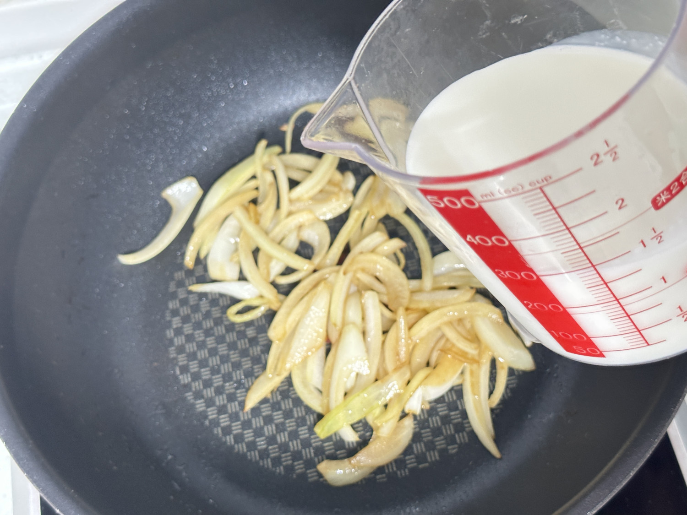

19
오늘은 이삿날 중식
대패 우유 카레우동 레시피
물 대신 우유로 끓여 만든 우유 카레우동입니다. 고명으로 대패삼겹살을 올려 같이 먹으면 조합이 아주 좋아요.
1인분
20분 이내
아무나
[재료]
우동면1개, 양파 1/2개, 우유 300ml, 고체카레 또는 카레가루 1개 / 3스푼, 대패삼겹살 100g
양파를 채 썰어주세요.
팬에 대패삼겹살을 바싹 익혀주세요.
대패삼겹살을 한쪽에 빼두고 남은 기름에 양파를 볶아주세요. 양파가 흐물해지고 색이 갈색빛이 될때까지 볶아주세요.
키친타올로 기름을 닦고나서 우유를 부어주세요.

강불로 끓여주세요.
끓어오르면 고체카레를 넣고 바닥에 늘러 붙지않게 저어주세요.
우동면을 넣고 우동면이 풀어지게 젓가락으로 살살 건들여가면서 저어주세요.
우동면과 양념이 잘 베어들면 불을 꺼주세요.
접시에 우동을 담아주고 위에 고명으로 대패삼겹살을 올려주면 완성입니다.
미승인
삭제
목록